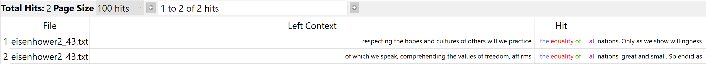

For this assignment, I really wanted to do something with courtroom transcripts. As there are hundreds of thousands readily available online to the public. I wanted to use a case that was highly publicized. I also wanted the case to have relevance to me. I landed on Brown versus the Board of Education. I decided to compare Eisenhower’s second inaugural speech to the Brown vs Education case. The supreme court ruled for segregation in schools to be stripped away. Then I became curious, about how presidents or one president reacts to these things. During the Brown vs Board, Eisenhower was president. After checking, his first inaugural address which was in 1953, I realized that he might not have seen the point in mentioning the segregation in our school systems, as the law hadn’t changed. The law was changed when he was already in his first term of presidency. In 1957 after the law was changed 1954, he might have felt the need to endorse desegregation. Beyond just mentioning current happenings, I wanted to see if he appeared to be in favor of the law. If the language, he used was in support of the new laws. Was he arguing against or for the progress? In these text analyses, we will see the connections if any between Eisenhower’s second inaugural address and Brown vs The Board of education court case.
Cactus Fun Facts: Cacti life circle lasts from 15 to 300 years, depending on the species. You can safely drink water from the cactus. However, it has a higher density than regular, tap water. Bees, butterflies, moths, bats, and hummingbirds are the main pollinators of the cacti. Instead of leaves, cacti have spines. They can be soft or rigid, curved or straight, scattered or somewhat arranged. Spines can grow up to 6 inches (15 cm) long.
Succulent Fun Fact: Succulents and cacti are not the same thing. The words are often used interchangeably, but cacti are actually a type of succulent.
Here are the voyant views for the most popular words used in Eisenhower's second ignural speech and the court case brown vs board.
Here are the voyant views for the most popular words used in Eisenhower's second ignural speech and the court case brown vs board.